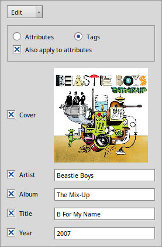

The Army Knife is a powerful tool to perform ID3-Tag to Attribute assignment, Attribute to ID3-Tag assignment, parsing of filenames to fill attributes, and renaming files based on their attributes. It also includes an editor that lets you work with multiple files at once. It supports MP3, Ogg Vorbis and FLAC format.
Note, that to use Haiku's fast queries, the attributes have to be filled. On the other hand, to be useful on other platforms and stand alone players, the ID3 tags should be filled. Therefore, it's best to keep both in sync.
You start either by selecting your files and invoking the context menu Open With... and choose Army Knife or simply start Army Knife and add files via drag&drop. This is Army Knife's window, the opened files in a list to the right and controls to the left, depending on the selected mode:

There are three modes of operation, selected with the drop-down menu on top or switched with ALT ←/→:
|  | At the top, you decide if you'd like to see and edit the Haiku attributes of the files or their ID3-Tags. The checkbox below decides if your changes will also apply to the respective other. All changes only affect the selected files and only after pressing Apply, which is the default when pressing ENTER. Also, only the checkmarked attributes/tags will be written to these files. The "Genre" field is a bit of a special case: If you choose to set a custom genre, only Haiku attributes will contain your text. ID3-Tags only show standard genres and will fall back to "Other". There's some convenient keyboard navigation when you have to edit a tag of single files, e.g. "Title" and "Track" of an album. The cursor can stay in the respective tag's text box while you select a new file with keyboard shortcuts:
|
You can copy the checkmarked fields either from Attributes → Tags or Tags → Attributes. Make sure you've got the direction right or you'll accidentally copy empty attributes over perfectly filled ID3-Tags! Better switch quickly over to the Edit mode to have another look... Again, changes take only effect on selected files after pressing Apply. |
You can either rename all selected files according to their attributes (Attributes → Name) or, conversely, fill attributes according to the filename (Name → Attributes). The filename is analyzed/build with a pattern, selected from the Filename drop-down menu. Above it is a legend describing what abbreviation corresponds to what attribute. \* is a wildcard you can use for parts that shouldn't go in any attribute. Of course, you can define your own pattern by choosing New.. from there. As usual, again changes take only effect on selected files after pressing Apply. |
If you find bugs or have a feature request, check out The Army Knife project page. If your issue wasn't reported already submit it!
Brian Tietz for Santa's Gift Bag.
YNOP for the excellent YTabView.
Technix for the UI suggestions.
ToBeOrNotToBe for his time and Ogg expertise.
The BeShare community for all of their help.
Be for THE Operating System.
The Haiku devs for making Haiku a reality.
And everyone else in the BeOS/Haiku community for making it what it is.